-
Rosa #001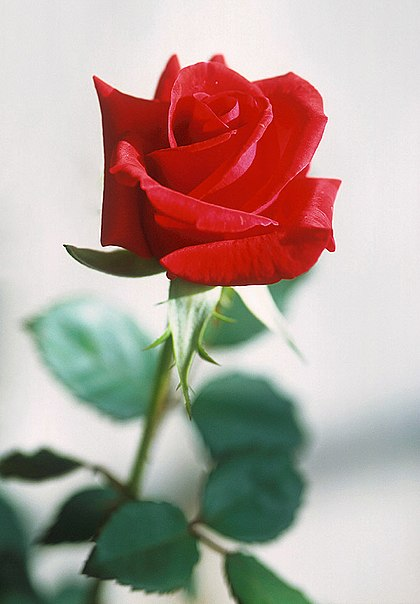
O que representa uma rosa?
Símbolo da pureza a rosa possui suas propriedades não só simbolicamente, mas é aproveitada na medicina, para perfumes, culinária, entre outros atributos. A Rosa tornou-se simbolismo do amor e, por isso, muitas pessoas têm o hábito de presentear quem ama com a flor do amor. -
Violeta #002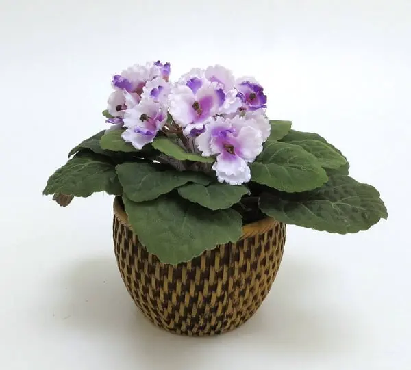
Qual é o significado da flor violeta?
Entre os muitos significados associados à essa flor, os principais são: modéstia, lealdade e pureza de sentimentos com a pessoa homenageada. A violeta também representa espiritualidade elevada e dá um certo toque de mistério à decoração do ambiente. -
Jasmim #003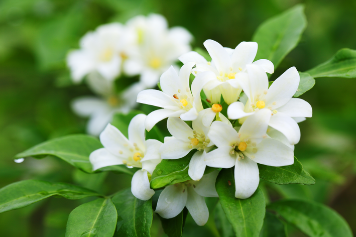 Qual o significado da flor de jasmim?
A flor de Jasmim simboliza a paz e a inocência. -
Margarida #004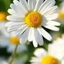
Qual é o significado da flor margarida?
História da margarida:
Antigamente, a flor margarida era considerada a flor das donzelas e ainda hoje simboliza a juventude, o amor inocente e a sensibilidade. Esta delicada flor também representa a pureza, a paz, a bondade e afeto. -
Orquídea #005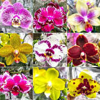
Orquídeas são todas as plantas que compõem a família Orchidaceae, pertencente à ordem Asparagales, uma das maiores famílias de plantas existentes.
Apresentam muitíssimas e variadas formas, cores e tamanhos e existem em todos os continentes, exceto na Antártida, predominando nas áreas tropicais. -
Cravo flor #006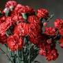
Qual é o significado da flor cravo?
O cravo e sua simbologia
Por apresentar grande variedade de cores e grande significado mitológico, a flor cravo representa, na maioria das culturas mundiais, a boa sorte, ou seja, o dom de atrair bênçãos e vitórias. -
Crisântemo #007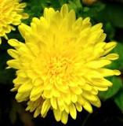
Qual o significado da flor de crisântemo?
De acordo com o taoismo, o crisântemo é um símbolo de simplicidade e perfeição.
Como é uma flor típica do Outono, também significa tranquilidade e é visto como um mediador entre o céu e a terra, a vida e a morte. -
Tulipa #008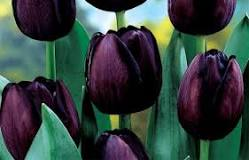
Qual é o significado da flor tulipa?
Significado das tulipas e suas cores. De modo geral, as tulipas simbolizam o amor perfeito.
Esse simbolismo está muito arraigado com as culturas da Turquia e da Pérsia.
E por serem as primeiras flores a nascer na primavera, também simbolizam o renascimento. -
Gérbera?" class="foto" >
#009Qual o significado da flor de gérbera?
A gérbera simboliza a pureza e inocência das crianças, e também a beleza da vida e energia positiva da natureza.
Em muitas ocasiões elas também estão relacionadas com o sucesso, sendo oferecidas para congratular alguém pelo seu recente sucesso. -
Flor copo de leite #010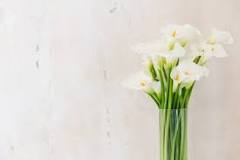
Qual é o significado da flor copo de leite?
Seja como adorno para casamentos ou enfeite para o lar, a flor copo de leite é símbolo de paz e sua presença é dita como tranquilizante.
Já sua espádice amarela significa felicidade, prosperidade e elevação espiritual. -
Lírio #011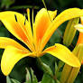
Qual o significado da flor do lírio?
De modo geral, a espécie é ligada ao romantismo, pureza, inocência e amor puro.
A flor lírio é repleta de magia, religiosidade e miticismo por ter uma forte relação com a fé e a devoção em diferentes religiões e ser considerada sagrada. -
Lótus #012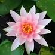
Qual é o significado da flor de lótus?
Esta pequena flor tem significado importante na cultura oriental, na qual é comumente associada ao Buda. A planta significa pureza do corpo e da mente, e renascimento.
Isso porque, embora cresça na lama, ela se torna uma bela flor: o caminho para purificação em meio às impurezas mundanas.